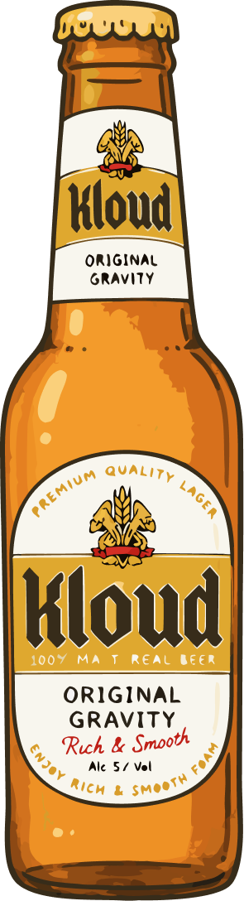
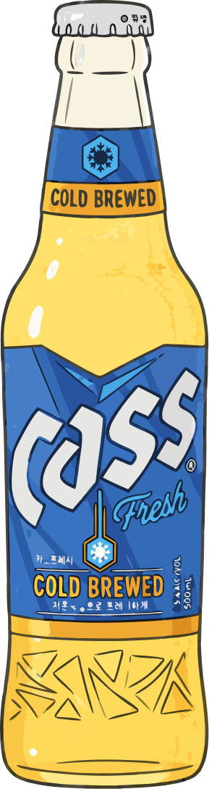

About
언제부터
운전할 수 있을까?
운전할 수 있을까?
내일 아침 운전가능 시각을
위드마크 공식을 참고해 추정해드립니다.
위드마크 공식을 참고해 추정해드립니다.
위드마크 공식을 참고했어요.
음주량·체중·성별로 혈중 알코올 농도를
수학적으로 추정하는 법과학 공식에 기반했어요.
수학적으로 추정하는 법과학 공식에 기반했어요.
개인 맞춤 계산
성별·키·나이·체중을 반영한
왓슨(Watson)식으로 개인별 수치를 산출합니다.
왓슨(Watson)식으로 개인별 수치를 산출합니다.
참고용 추정치입니다
실제 분해 속도는 개인에 따라 달라질 수 있기에,
음주 후 운전 여부의 판단근거로 사용해서는 안 됩니다.
음주 후 운전 여부의 판단근거로 사용해서는 안 됩니다.
Step 1
몇 시까지
달릴 건가요?
달릴 건가요?
마지막 술잔을 내려놓을 것 같은
시간을 알려주세요.
시간을 알려주세요.
시
12
:
분
00
Step 2
(만)나이가
어떻게 되세요?
어떻게 되세요?
알코올 분해에 영향을 주는
중요한 정보예요.
중요한 정보예요.
--
세
Step 3
키와 체중을
알려주시겠어요?
알려주시겠어요?
쉿! 저만 알고 있을게요.
모든 개인정보는 저장되지 않아요.
모든 개인정보는 저장되지 않아요.
키
--
cm
체중
--
kg
Step 4
성별을
선택해주세요
선택해주세요
알코올 분해 속도가
성별에 따라 달라져요.
성별에 따라 달라져요.
남성
여성
Step 5
오늘의 주종은
무엇인가요?
무엇인가요?
오늘 마실 소주를 골라주세요.
과도한 음주는 건강을 해칠 수 있어요.
과도한 음주는 건강을 해칠 수 있어요.

참이슬
16.0도

진로
16.0도

처음처럼
16.0도

새로
15.7도
Step 5
몇 병이나
마실 건가요?
마실 건가요?
1병 = 360ml 기준이에요. (소주)
오늘은 몇 병
0 ml
0
Step 6
맥주는
안 드시나요?
안 드시나요?
오늘 마실 맥주를 골라주세요.
과도한 음주는 건강을 해칠 수 있어요.
과도한 음주는 건강을 해칠 수 있어요.

크러쉬
4.5도

클라우드
5.0도

켈리
4.5도

테라
4.6도

카스
4.5도
Step 7
몇 병이나
마실 건가요?
마실 건가요?
1병 = 500ml 기준이에요. (맥주)
오늘은 몇 병
0 ml
0

상세 분석
혈중알코올
분해 타임라인
분해 타임라인
개인차에 따라 실제 분해시간과 차이가 있을 수 있어요.
어디까지나 참고용 수치로 봐주세요.
어디까지나 참고용 수치로 봐주세요.
최고 혈중알코올농도 (BAC)
BAC 0.000%
0.00%
시간대별 분해 현황
대한민국 음주운전 법적 기준
면허 정지
0.03% 이상
면허 취소
0.08% 이상
나의 추정 체수분량 (TBW)
--
L
오늘 마신 알코올 칼로리
--
kcal
이 결과는 위드마크식 기반 추정치이며 실제 수치와 다를 수 있습니다. 음주 후에는 측정 결과와 관계없이 운전을 삼가시기 바랍니다.